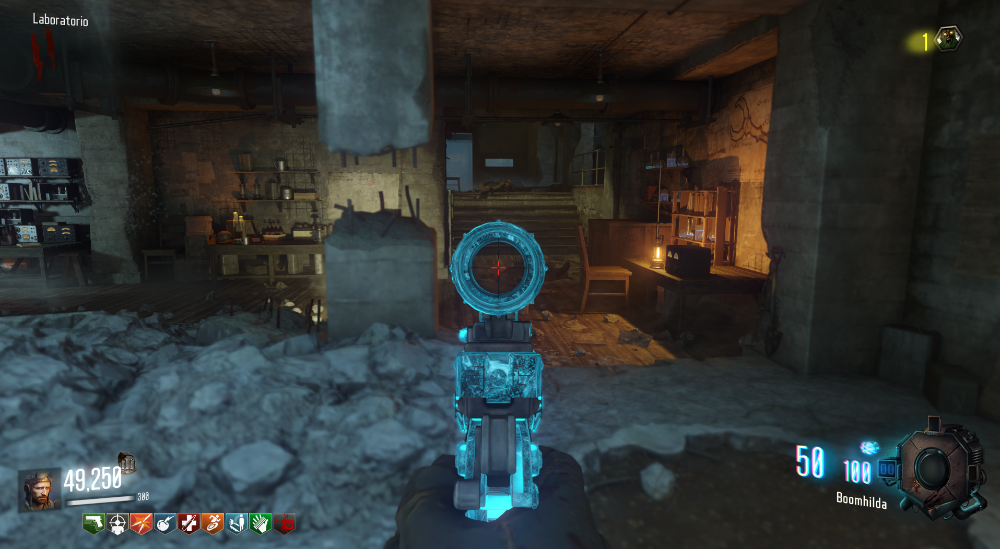
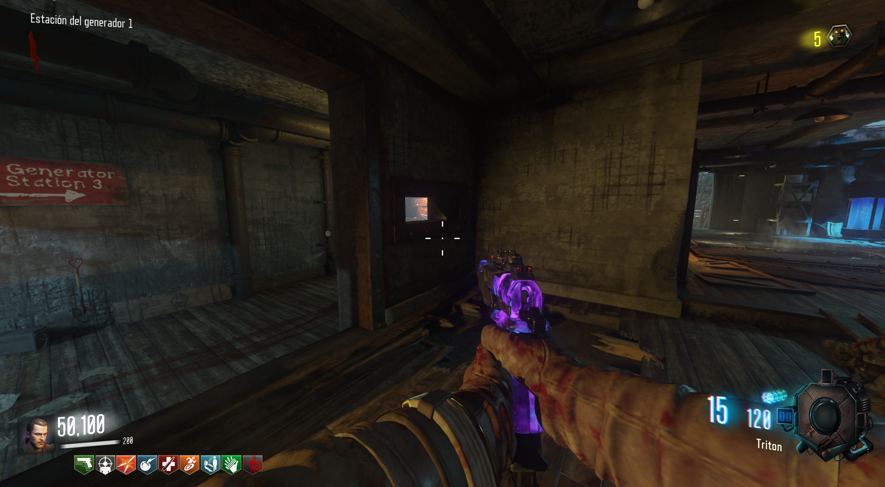
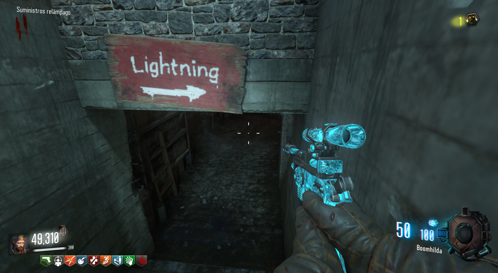
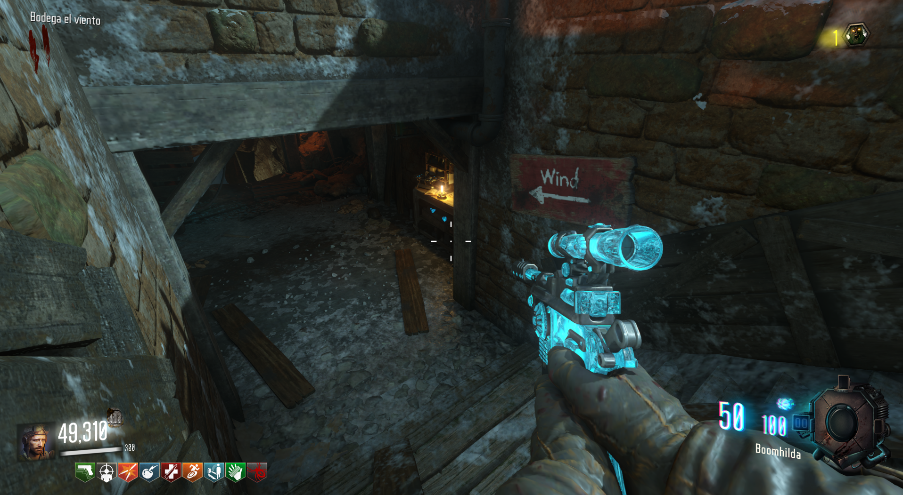
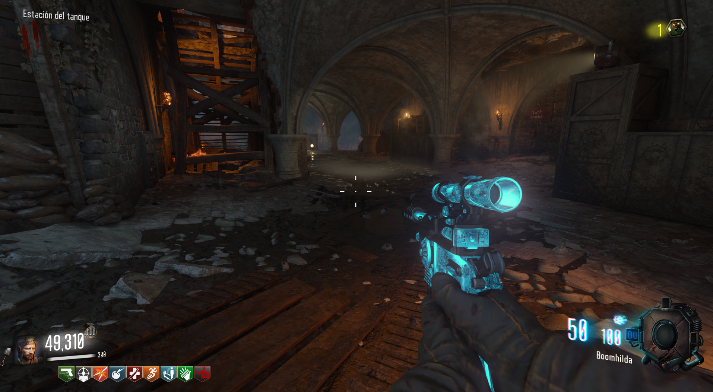
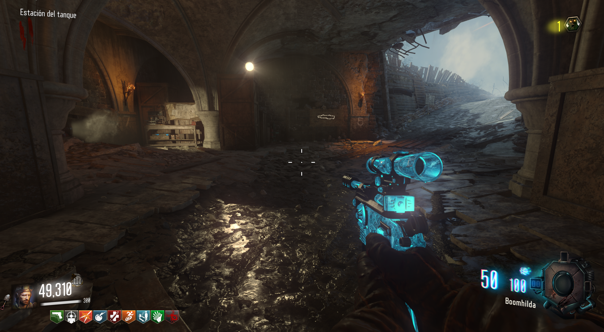
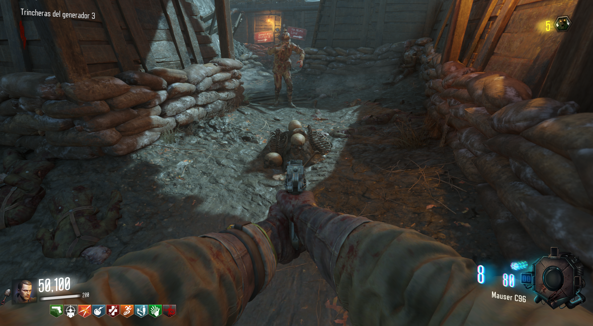
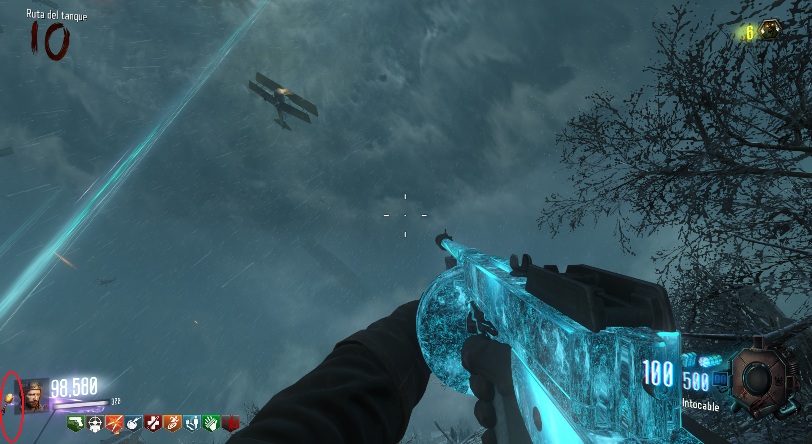

Primero debemos obtener la pala, luego la pala de oro y finalmente el casco de oro. Localizaciones de la pala:

1. En el Spawn, en la pared de la derecha.

2. En el generador 1, de camino al generador 3.

3. En la mina de rayos, en la izquierda.

4. En la mina de viento, en la derecha.

5. Detrás del tanque bajo la iglesia, tras las escaleras.

6. Detrás del tanque bajo la iglesia, a la derecha de la mesa de fabricación.
Pala de Oro:
Para obtener la pala de oro, lo único que debemos hacer es excavar 30 montones de huesos.

Llegado el momento, escucharemos un sonido y podremos ver que tenemos la pala de oro.
 Casco de Oro:
Para el casco, tendremos que seguir excavando hasta que aparezca. Para este, no hay un número determinado de veces, podría ser la primera vez que excavas después de la pala de oro o la décima.